Goblin Host · revised concepts
The hired ogre, Slinger, and Trap-setter are revised. Sneaks and Golden Guard are unchanged. Portraits, map tokens, and small icons are shown for review only; no game assets were replaced. Open the one-page overview.
Sneaks
Unchanged
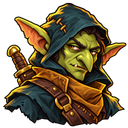
Map token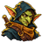
Small iconHired Ogres
Grimace and high ponytail
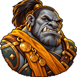
Map token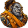
Small iconThe Golden Guard
Unchanged
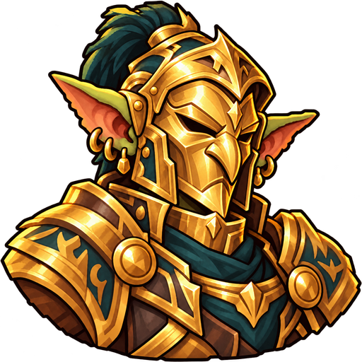
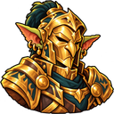
Map token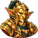
Small iconSlingers
Brass scope goggles
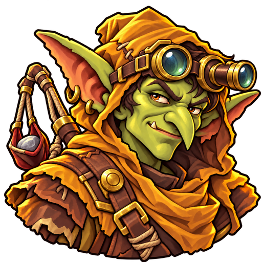
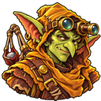
Map token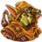
Small iconTrap-setters
New body and goblin nose
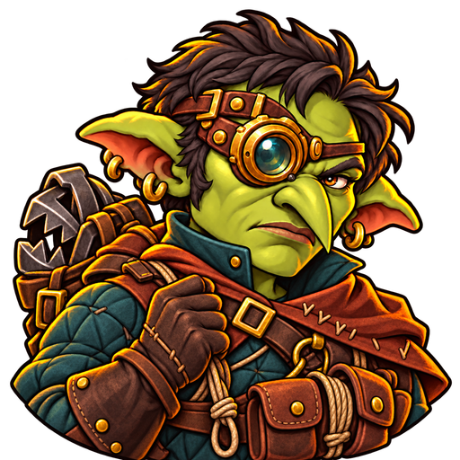
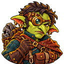
Map token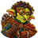
Small icon